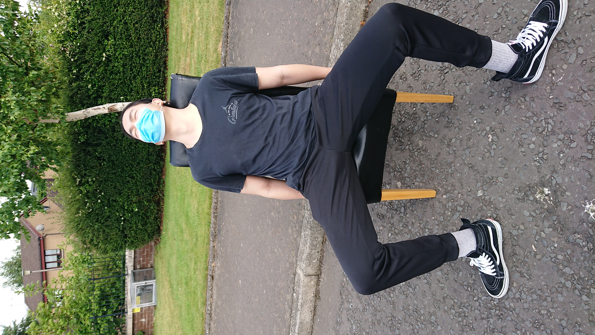
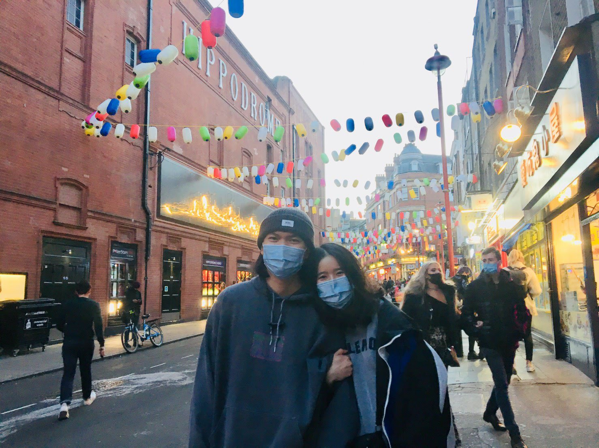
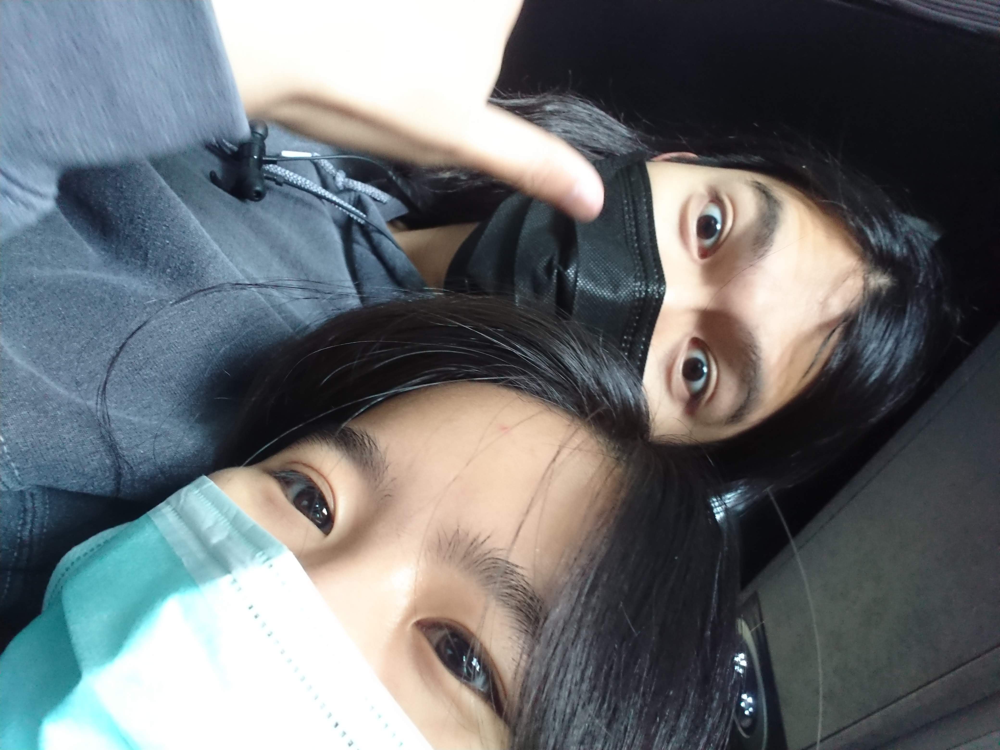
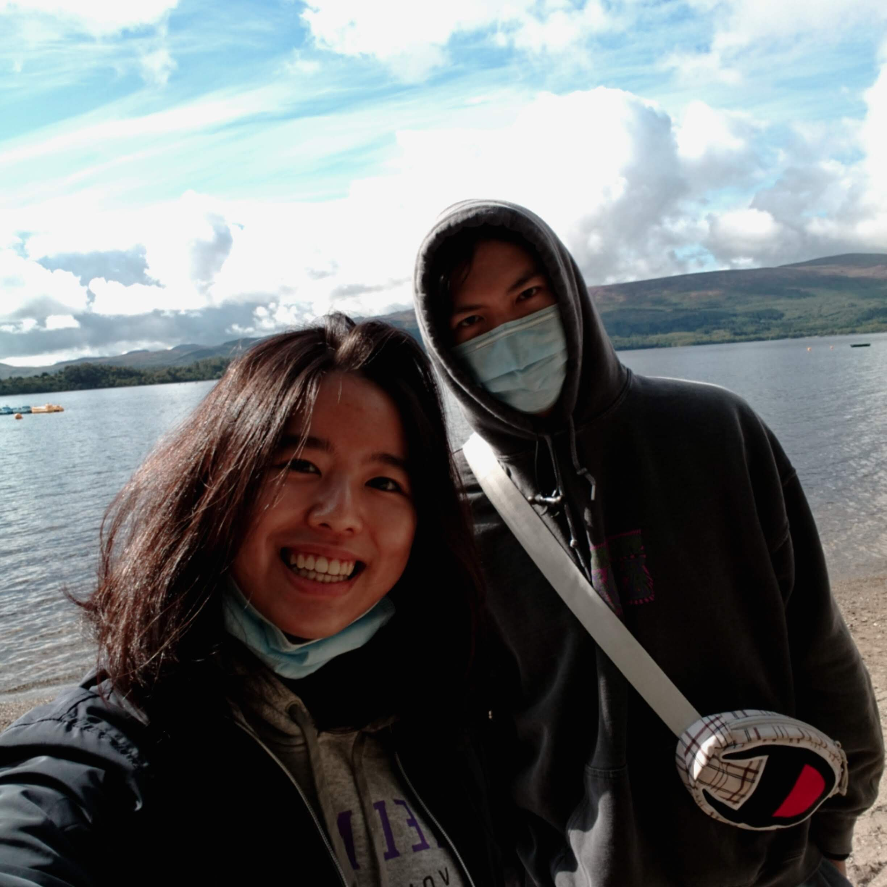
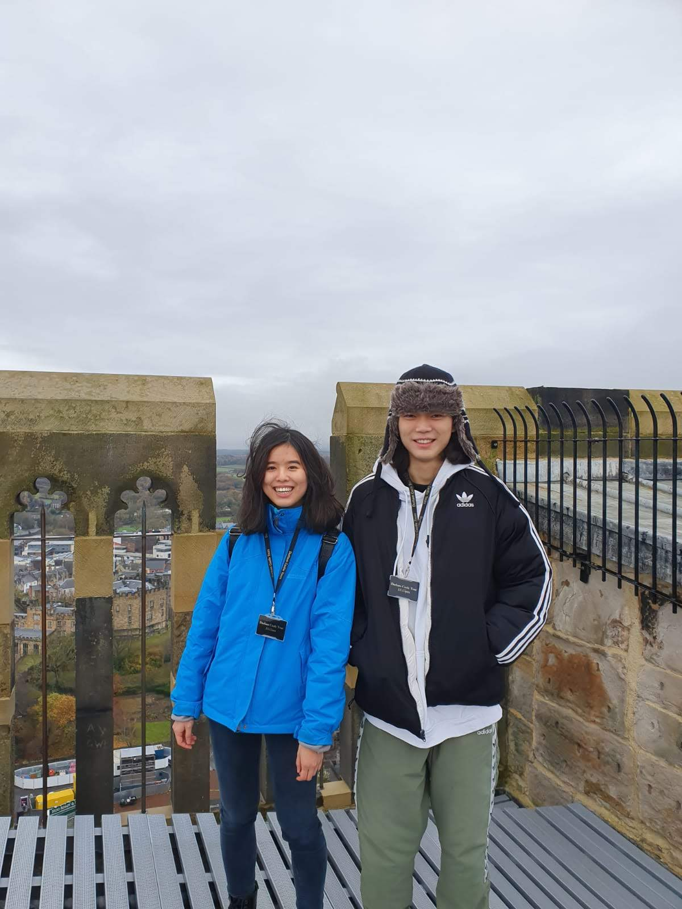
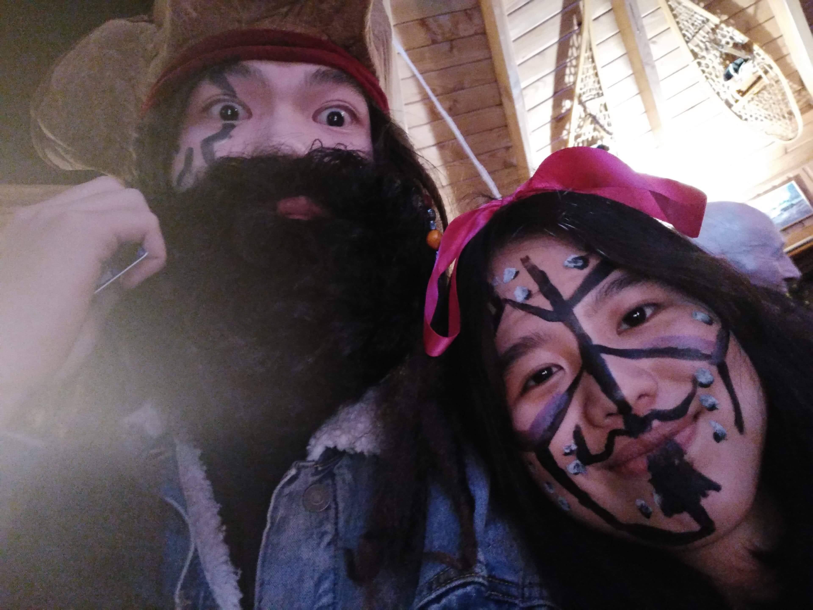

曾毅寶貝生日快樂
不知道你會不會喜歡這個小禮物...這是我之前滑抖音無意間看到覺得很炫砲的特效，然後稍微調整其他東西，想說至少看起來蠻厲害的嘿嘿嘿。
(但以後會少滑...不然感覺自己越來越智障QQQ)
對了，貼心提醒，可以搭配音樂一起喔!!!
好了!正文開始啦/
翻了好久的照片，又強行回憶了一遍這快樂的一年，才驚覺我們的合照真的好少...
這大概也是這一年最遺憾的事情吧。一起去了很多地方，幫你拍很多照片，卻沒有留下"我們"
回家的這段時間，每天都很想念你，想著如果現在在英國我們會做什麼，想著明明才過了幾天怎麼世界就不一樣了。
好恨這個疫情，卻同時在lockdown期間慶幸著，因為疫情，可以更理所當然的住你家，甚至搬到deaconess；因為疫情，可以完全獨佔你，享受兩個人的時光。
但是回家後又很希望疫情快點結束，因為這變成我們兩個見面的阻礙，只能每天視訊遠望著遙遙無期那下次見面的約定...
Hannah會在這段期間努力充實自己，無論是工作或是減肥，並說服父母親人，讓他們能接受你，也希望yi不會放棄我們之間的感情。
Yi也要為自己將來的phd努力喔!在Hannah心目中，Yi是努力追求自己夢想很有目標也肯付出的人呢!所以yi將來一定會很厲害的，hannah對yi充滿信心。
其實，我也不知道這些文字能不能看3分鐘哈哈哈，不過我用了loop所以可以一直跑馬燈，應該不至於很尷尬啦!
最後，今天是我們小寶貝Yi的生日啊!!!祝你天天開心，雖然無法陪伴在你身邊，但只要我們心在一起，距離絕對不是問題的。
Hannah會一直愛你的，Yi也要繼續愛Hannah喔<3
2020.10.31





